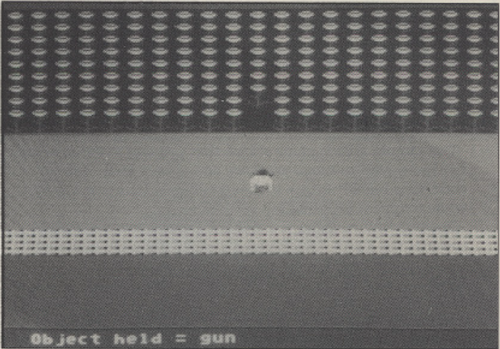

XL/XE TYPE-IN

You came to the West to make your fortune but so far it
has been an endless cycle of card playing, drinking
whisky, eating beans and shooting the numerous people
who said you smelled.
However, your luck is about to change. It is rumoured
that a cache of gold coins is hidden somewhere in Indian
territory and the treasure is there for the taking - well
almost! Just don't let the stories about the man-eating
vultures and the terrors of the desert deter you. Okay, it
could seriously damage your health but what kind of
cowboy are you - lily livered? No, of course not! So, plug
a joystick into port 1, get your spurs on and ride into the
West.
Oh! Silly me! I forgot. You can't afford a horse yet, can
you? How about a sponsored walk?
PLAYING THE GAME
Use the joystick to move the cowboy. To open doors, kill
vultures etc. touch them whilst holding the correct object.
To pick up or drop objects position the cowboy appropri-
ately and press the joystick button.
Press the button to reincarnate after death, preserving
the current object positions. Your enemies will reincar-
nate as well though, so keep your weapons handy!
If you find yourself in an impossible postion press
START to begin again with the objects in their original
positions.
The game ends when you find the treasure. Press
START to play again.
Bill Halsall's new arcade
style adventure proves
that the Wild West is as
challenging as ever
TYPING IT IN
Cassette and disk users should type in Listing 1, SAVE or
CSAVE a copy, then RUN the program. The program will
check each line of data and inform you of any errors. Correct
any errors and RUN the program again until all errors are
eliminated. When this is done answer the cassette/disk ques-
tions accordingly to create a boot tape or binary disk file.
Cassette users should load the boot tape created by fistly
removing all cartridges and then turning on the computer
while holding down the START key (XL and XE owners
should hold down OPTION as well). Press RETURN and the
tape will load an run automatically.
Disk users should clear Listing 1-from memory after saving
and running it as above by tiping NEW and pressing RE-
TURN. Next, type in Listing 2 and save it on the same disk
as the binary file created by Listing 1. RUN the Listing 2
program with the disk in the drive and the game will load and
run automatically.
16
Issue 54 - New Atari User
PDF Main